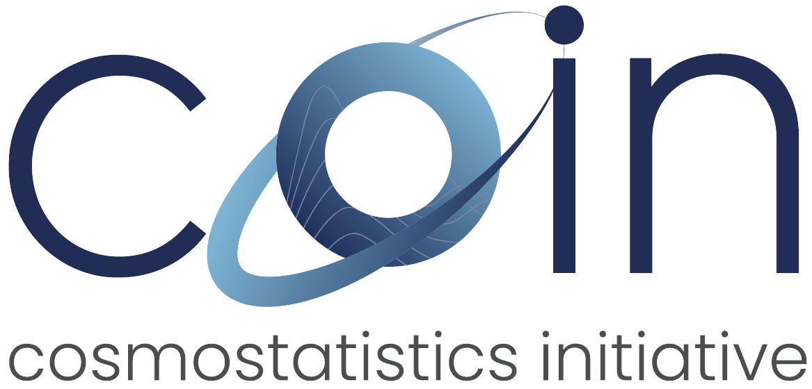
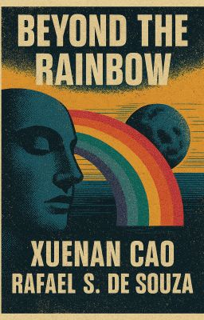

2025–present
Federal University of Rio Grande do Sul
Visiting Professor
Brazil
Disciplines are useful divisions of labour, not divisions of thought. Astronomy gave me scale; statistics, a language for uncertainty; literature, another way of asking what can be said.

2025–present
Visiting Professor
Brazil
2024–present
Adjunct Associate Professor
United States
2023–present
Senior Lecturer
United Kingdom
2020–2022
Associate Professor
China
2017–2020
Postdoctoral Fellow
United States
2014–2016
Postdoctoral Fellow
Hungary
2012–2014
Postdoctoral Fellow
South Korea
2010–2011
Postdoctoral Fellow
Japan
1999–2004
BSc in Astronomy
Cosmic Acceleration
2004–2009
Direct-entry PhD in Astrophysics
Origin of Cosmic Magnetic Fields
2018

Cambridge University Press, 2017
PROSE AwardCosmology & Astronomy
2016
International Astrostatistics Association, Postdoc Award, for the Bayesian negative-binomial analysis of globular-cluster populations.
2014—

Former Vice-President
